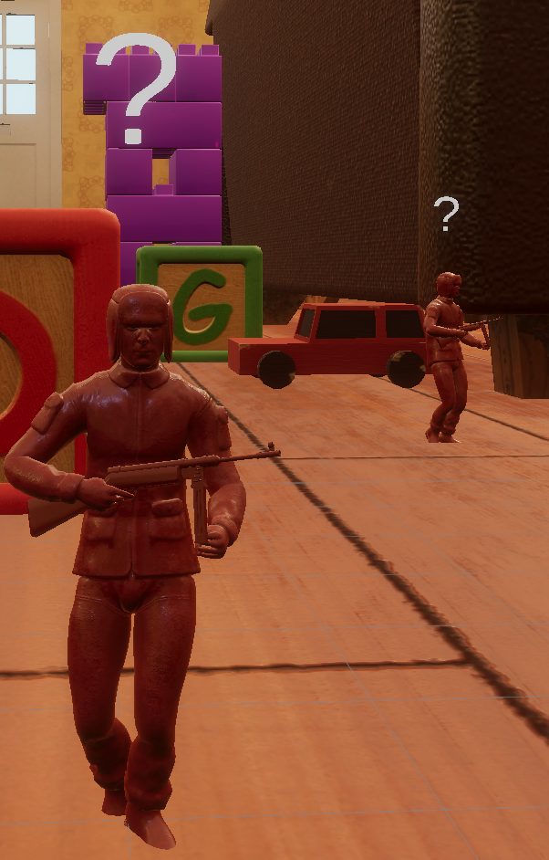
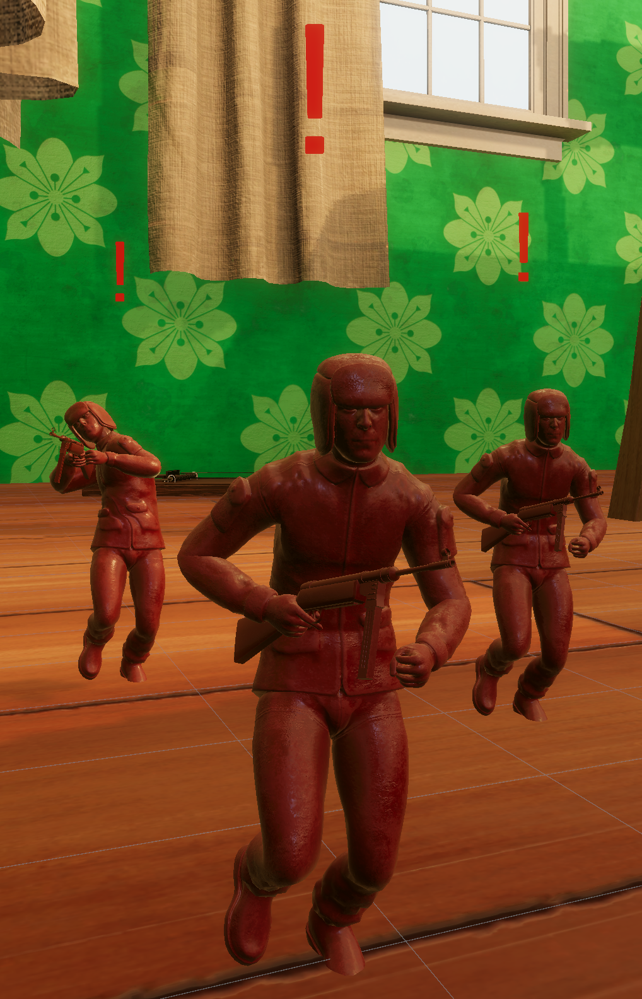
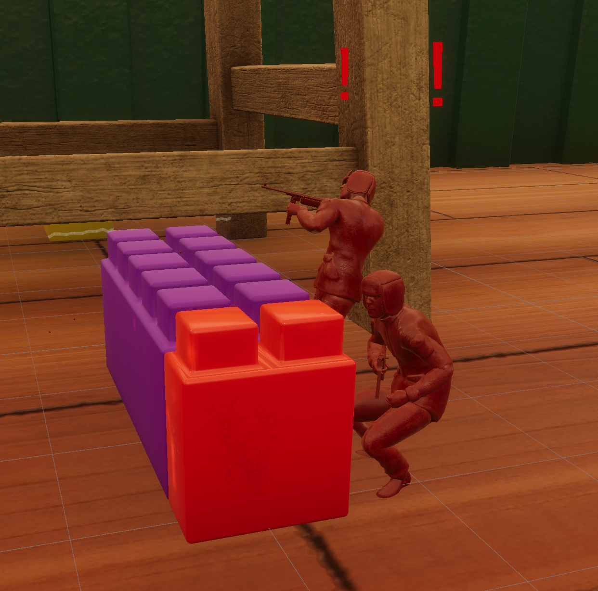

Overview
A vertical slice sandbox shooter developed in Unity for Rebellion as part of a multidisciplinary 16-person team. The project focuses on systemic gameplay, emergent AI behaviour, and objective-driven encounters within a toy-scale environment.
My role on the project was AI Programmer, responsible for building the core enemy behaviour systems, including decision-making, perception, and combat logic.

My Contribution
I was responsible for implementing the core enemy AI systems for the project, focusing on decision-making, perception, and combat behaviour.
I developed a Finite State Machine (FSM) architecture that drives all enemy behaviour. This includes multiple distinct states such as Patrol, Investigate, Engage, Search, and Take Cover. Each state controls both movement and combat logic, allowing enemies to behave differently depending on their awareness of the player.
The game features multiple enemy types, including patrol units, guard enemies, target objectives, and stationary defenders. These types share the same underlying AI framework but differ in behaviour configuration, such as movement constraints, aggression levels, and objective priorities.
I implemented a dual-sense perception system combining vision and hearing. Vision uses field-of-view checks and line-of-sight validation, while hearing is driven by gameplay events such as weapon fire and movement noise, scaled by distance and loudness. Both systems feed into a shared detection model that determines whether enemies remain idle, investigate a location, or enter full combat.
I also built the squad awareness system, allowing detection events to propagate between nearby enemies. This enables coordinated group behaviour, where multiple enemies can react to a single player action rather than responding independently.
In addition, I worked on the cover system integration, implementing logic for evaluating nearby cover points and transitioning enemies into cover-based combat states. This allowed enemies to reposition dynamically during firefights rather than remaining static targets.



Technical Breakdown
The AI architecture is built using an event-driven design, where perception, combat, and movement systems remain decoupled but communicate through shared signals. This improves scalability and makes it easier to introduce new behaviours without modifying existing systems.
Enemy variation is achieved through configuration rather than separate implementations. Patrol, guard, target, and stationary enemies all use the same FSM framework, but with different state weights, movement rules, and reaction thresholds.
A key design goal was supporting emergent gameplay. The combination of vision, hearing, and squad awareness allows enemies to react dynamically to player actions, enabling different playstyles such as stealth disruption or direct combat engagement.
Outcome
The final AI system supports reactive, squad-based combat that responds dynamically to player actions. This helps reinforce the sandbox design of the game by allowing different playstyles such as stealth, distraction, and direct combat.